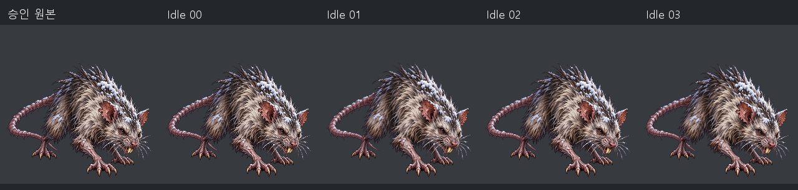
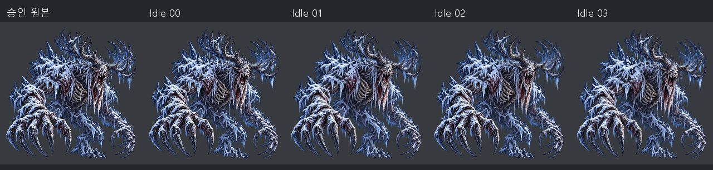
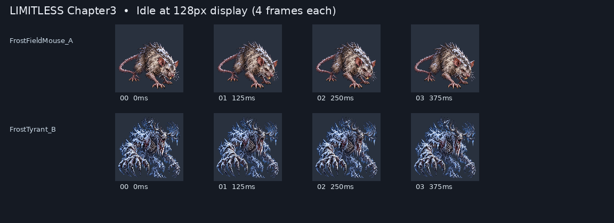

Chapter3 Idle v1 - review only
Both technical/art PASS. Motion approval pending. Original assets unchanged.
Unity captured GameView loop - 8 FPS

Delivered exact 125ms previews
Approved / Idle00 / 01 / 02 / 03


128px comparison

File/Frame validation | Unity frame trace timing